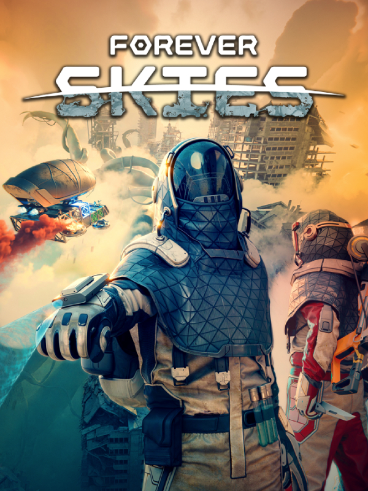

Forever Skies
Forever Skies
Details
|  | |
| Playtime | Not Played |
| Last Activity | Never |
| Added | 2025-12-19 0:09:53 |
| Modified | 2025-12-19 11:05:13 |
| Completion Status | Not Played |
| Library | Steam |
| Source | Steam |
| Platform | PC (Windows) |
| Release Date | 2025-04-14 |
| Community Score | 70 |
| Critic Score | |
| User Score | |
| Genre | Adventure Simulator |
| Developer | Far From Home |
| Publisher | Far From Home |
| Feature | Co-Operative Multiplayer Single Player |
| Links | Steam Official Website YouTube Discord Twitch Subreddit Community Wiki Playstation Bluesky |
| Tag | 3D Action Adventure Atmospheric Base Building Building Co-op Crafting Exploration First-Person Futuristic Multiplayer Open World Open World Survival Craft Post-apocalyptic Resource Management Science Sci-fi Singleplayer Survival |
Description
BUILD & CONTROL YOUR AIRSHIP

You will build and customize a high-tech airship. It will be your home, workshop, laboratory and more while flying above the surface of Earth. Control and steer it towards the ruins of our civilization and mysterious anomalies. Manage your airship hull and its integrity. Extract and gather resources to improve your airship and make it uniquely yours.
UTILIZE SCIENCE TO SURVIVE

Your scientific know-how will allow you to build and operate different machines. Analyze scanned items and reverse engineer lost technology. Research new ways of obtaining food and resources, discover new tools, and increase the chance of your survival.
SCAVENGE RUINED SKIES

Explore and extract resources from the ruins that were built up high to escape the dust. Surrounded by drifting debris caused by a strange anomaly, harvest it into raw materials to help you survive. Explore and discover the remains of our civilization. Find out what happened and why Earth evolved to a place where we lost control of our previous position at the top. Discover secrets of our past.
DESCEND BELOW THE DUST

After descending below the dust, you will discover a strange new world, the planet's surface that changed in our absence. Face evolved fauna and flora and hunt for viral pathogens to cure a mysterious illness threatening your family.
RETURN TO EARTH

Forever Skies is an action-survival game taking place on Earth, which was devastated by a global ecological disaster. This event caused the surface of the planet to be covered in a colossal layer of toxic dust. You’re returning to our planet hundreds of years later - will you recognize our world?
We Are Far From Home
We’re Far From Home, an experienced game dev team based in Wroclaw, Poland. We are a group of friends and colleagues who worked together on quite a few projects and titles such as the Dying Light series, Divinity Original Sin series, The Medium, Outriders and many others

CURRENT ROADMAP

UPDATES